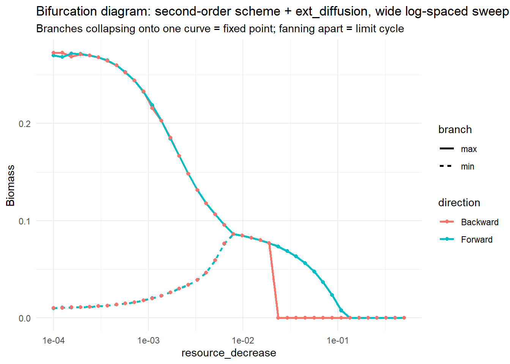

Code
library(mizer)
library(patchwork)
library(reshape2)
library(plotly)
library(dplyr)
library(mizerExperimental)
library(tidyverse)
library(glue)
library(ggplot2)
library(colorRamps)
library(future.apply)Samia
July 3, 2026
Day 19 closed with four threads left open: plot maximum and minimum separately instead of collapsing to max − min, to get an actual bifurcation-diagram view of the amplitude data; try a different perturbation type; keep working through Strogatz’s Nonlinear Dynamics and Chaos; and figure out why so much biomass piles up at juvenile sizes. Today picks up the first thread, and in the process pulls in two pieces of new information: mizerExperimental’s biomass_callback() (for watching a sweep run live) and mizer 3.1’s new second-order finite-volume scheme, second_order_w().
The baseline make_params() is unchanged from Day 18/19. Alongside it, make_second_order_params() builds the same Anchovy params but with mizer 3.1’s second-order finite-volume scheme switched on (second_order_w(params) <- c(flux = "centred", bin_average = TRUE), cutting size-discretisation error from O(Δw) to O(Δw²)) and a background external diffusion added via setExtDiffusion().
make_params <- function(lambda = 2.05, resource_decrease = 0.001,
beta = NULL, sigma = NULL, balance = TRUE) {
a0 <- 100
kappa <- a0 * exp(-6.9 * (lambda - 1))
no_w <- round(log(66.5 / 0.0003) / 0.1)
args <- list(
species_name = "Anchovy",
w_min = 0.0003, w_max = 66.5, w_mat = 10,
no_w = no_w, lambda = lambda, kappa = kappa,
alpha = 0.1, gamma = 750, ks = 0
)
if (!is.null(beta)) args$beta <- beta
if (!is.null(sigma)) args$sigma <- sigma
params <- do.call(newSingleSpeciesParams, args)
r <- getResourceRate(params) * resource_decrease
setResource(params, resource_rate = r,
resource_dynamics = "resource_semichemostat", balance = balance)
}
make_second_order_params <- function(lambda = 2.05, resource_decrease = 0.001,
second_order = TRUE, ext_diff = 0) {
a0 <- 100
kappa <- a0 * exp(-6.9 * (lambda - 1))
no_w <- round(log(66.5 / 0.0003) / 0.1)
params <- newSingleSpeciesParams(
species_name = "Anchovy",
w_min = 0.0003, w_max = 66.5, w_mat = 10,
no_w = no_w, lambda = lambda, kappa = kappa,
alpha = 0.1, gamma = 750, ks = 0
)
r <- getResourceRate(params) * resource_decrease
params <- setResource(params, resource_rate = r,
resource_dynamics = "resource_semichemostat",
balance = TRUE)
if (second_order) {
second_order_w(params) <- c(flux = "centred", bin_average = TRUE)
}
# setExtDiffusion() needs ext_diffusion as a species x size array, not a
# bare scalar -- getDiffusion(params) is already validly shaped (all zero,
# since no ext diffusion is set yet), so it's used as a dim/dimnames
# template and filled with the scalar ext_diff. This turns out to be the
# wrong way to do this -- see "A Catch" below.
diffusion_template <- getDiffusion(params)
ext_diffusion_array <- array(ext_diff, dim = dim(diffusion_template),
dimnames = dimnames(diffusion_template))
params <- setExtDiffusion(params, ext_diffusion = ext_diffusion_array)
params
}
run_rd_sweep_second_order <- function(rd_seq, init_n = NULL, init_n_pp = NULL,
t_run = 300, lambda = 2.05,
second_order = TRUE, ext_diff = 0, label = "") {
out <- data.frame(rd = rd_seq, max_bm = NA_real_, min_bm = NA_real_,
bm_mean = NA_real_)
state_n <- init_n
state_npp <- init_n_pp
for (i in seq_along(rd_seq)) {
p <- make_second_order_params(lambda = lambda, resource_decrease = rd_seq[i],
second_order = second_order, ext_diff = ext_diff)
if (!is.null(state_n)) {
p@initial_n[] <- state_n
p@initial_n_pp[] <- state_npp
}
sim <- project(p, t_max = t_run, dt = 0.1, t_save = 0.5,
progress_bar = FALSE, effort = 0, method = "tr_bdf2")
bm <- getBiomass(sim)[, "Anchovy"]
tv <- as.numeric(names(bm))
late <- bm[tv > t_run * 0.6]
last <- dim(sim@n)[1]
state_n <- sim@n[last, , ]
state_npp <- sim@n_pp[last, ]
out$max_bm[i] <- max(late)
out$min_bm[i] <- min(late)
out$bm_mean[i] <- mean(late)
}
list(df = out, n_final = state_n, npp_final = state_npp)
}Day 18’s forward/backward sweep only covered resource_decrease = 0.001–0.01, ten points on a linear grid, and left an unresolved gap between the forward and backward transition points around rd ≈ 0.008. Today’s sweep widens that considerably: 40 points, log-spaced rather than linear, spanning 0.0001–0.5, which is 3.7 orders of magnitude, at roughly the same per-decade resolution as Day 18’s narrower grid rather than thinning out at the low end.
rd_seq <- exp(seq(log(0.0001), log(0.5), length.out = 40))
fwd_so <- run_rd_sweep_second_order(rd_seq, label = "FWD (2nd order)")
bwd_so <- run_rd_sweep_second_order(rev(rd_seq),
init_n = fwd_so$n_final,
init_n_pp = fwd_so$npp_final,
label = "BWD (2nd order)")
fwd_so_df <- fwd_so$df
bwd_so_df <- bwd_so$df[order(bwd_so$df$rd), ]Max and min are plotted separately rather than collapsed to amp = max - min, per Day 19’s carried-over What’s Next item, on a log x-axis since the grid now spans so many orders of magnitude:
bifurcation_df <- bind_rows(
data.frame(rd = fwd_so_df$rd, biomass = fwd_so_df$max_bm, direction = "Forward", branch = "max"),
data.frame(rd = fwd_so_df$rd, biomass = fwd_so_df$min_bm, direction = "Forward", branch = "min"),
data.frame(rd = bwd_so_df$rd, biomass = bwd_so_df$max_bm, direction = "Backward", branch = "max"),
data.frame(rd = bwd_so_df$rd, biomass = bwd_so_df$min_bm, direction = "Backward", branch = "min")
)
ggplot(bifurcation_df, aes(x = rd, y = biomass, color = direction, linetype = branch)) +
geom_line(linewidth = 1) +
geom_point(size = 1.5) +
scale_x_log10() +
labs(x = "resource_decrease", y = "Biomass",
title = "Bifurcation diagram: second-order scheme + ext_diffusion, wide log-spaced sweep",
subtitle = "Branches collapsing onto one curve = fixed point; fanning apart = limit cycle") +
theme_minimal()
Across the full 0.0001–0.5 range, the forward and backward max/min branches trace the same curve, with no gap, no region where one direction sustains oscillation while the other has already settled. The narrow-window ambiguity from Day 18 (a backward offset that looked like it sat past the forward transition point) doesn’t show up here at all: read at face value, this is what a clean supercritical bifurcation with no hysteresis looks like, once the sweep is widened enough and run on second-order-accurate numerics rather than the default first-order scheme.
That would resolve Day 18’s open question outright, except for one problem with how today’s sweep was actually built.
make_second_order_params() builds its ext_diffusion array by taking getDiffusion(params)’s shape as a template and filling every single element with the same scalar, ext_diff. That’s not what mizer’s own external diffusion is supposed to look like. mizer’s default formula is
\[D_{\text{ext},i}(w) = D_{\text{ext},i} \cdot w^{n_i + 1}\]
which is a per-species baseline rate (D_ext in species_params) that gets scaled allometrically across the size spectrum by w raised to the growth exponent plus one. Filling the whole array with one constant instead throws that shape away entirely: rather than a small diffusion term at small w growing smoothly into a much larger one at large w (or vice versa, depending on the exponent), every size class got exactly the same value regardless of body weight. Whatever ext_diff = 0.001 produced today is not “external diffusion at a background level of 0.001” in any sense that connects back to mizer’s own model of what diffusion means physically ; it’s closer to an arbitrary, non-physical size-independent forcing term that happened to share a value with the intended baseline rate.
That means today’s headline result, the hysteresis gap closing under the wider sweep, was generated under a diffusion setup that doesn’t mean what it was intended to mean. It’s a striking result, and the direction (second-order scheme, wider range, gap disappears) is plausible on its own terms. But it needs to be reproduced with ext_diffusion set up properly, editing the baseline D_ext rate in species_params and letting setExtDiffusion() derive the w^(n+1) array itself, rather than constant-filling, before it can be trusted as showing what a physically sensible level of external diffusion actually does to the bifurcation.
Work through Strogatz’s Nonlinear Dynamics and Chaos is ongoing, still centred on sections 8.3–8.7 (global bifurcations, hysteresis, quasiperiodicity, Poincaré maps) which is the exact toolkit needed to properly characterise what today’s sweep is showing, rather than reading a collapsed-onto-one-curve plot at face value.
Redo the external diffusion setup properly: Instead of filling ext_diffusion with a flat constant across every size class, edit the baseline D_ext rate in species_params and let setExtDiffusion() derive mizer’s intended \(D_{\text{ext},i}(w) = D_{\text{ext},i} \cdot w^{n_i+1}\) shape itself. Then rerun the wide, log-spaced sweep to see whether the hysteresis-gone result survives under a physically sensible diffusion term, rather than the constant-array version used today.
Keep working through Nonlinear Dynamics and Chaos: This is to build the background needed to properly characterise the bifurcation (and the parked chaos-looking cell from Day 19), rather than continuing to read these sweep plots at face value.
Change the juvenile slope, starting by reducing it: Investigating the juvenile-biomass conundrum from Day 19: does flattening the size-spectrum slope specifically over the juvenile size range change the juvenile:adult standing-stock ratio, or is the imbalance insensitive to it?
Increase the size range of the species: Investigating the same juvenile phenomenon from a different angle: does giving individuals more room to grow through (a wider w_min–w_max span) change how much biomass piles up at small sizes, or does the same lopsided ratio persist regardless of how much size range is available?